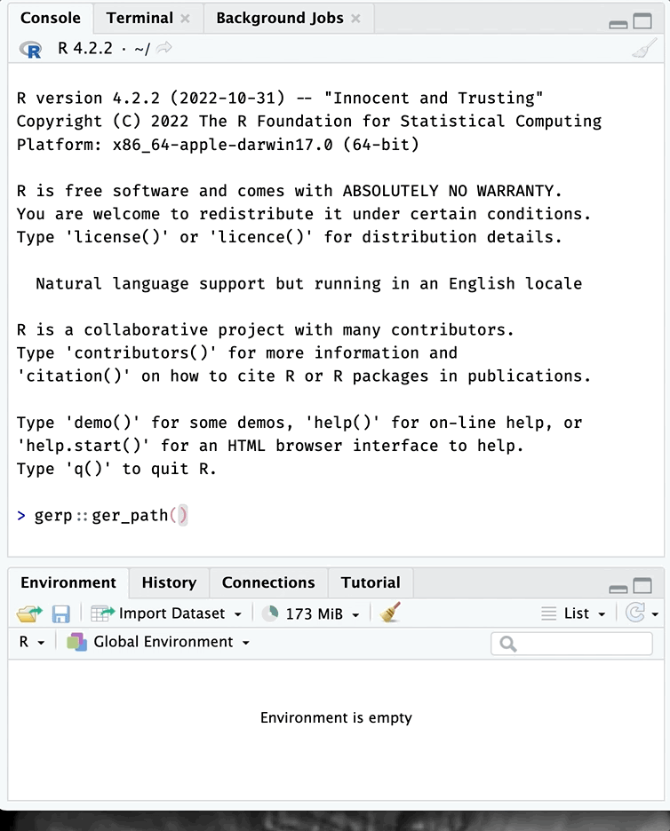
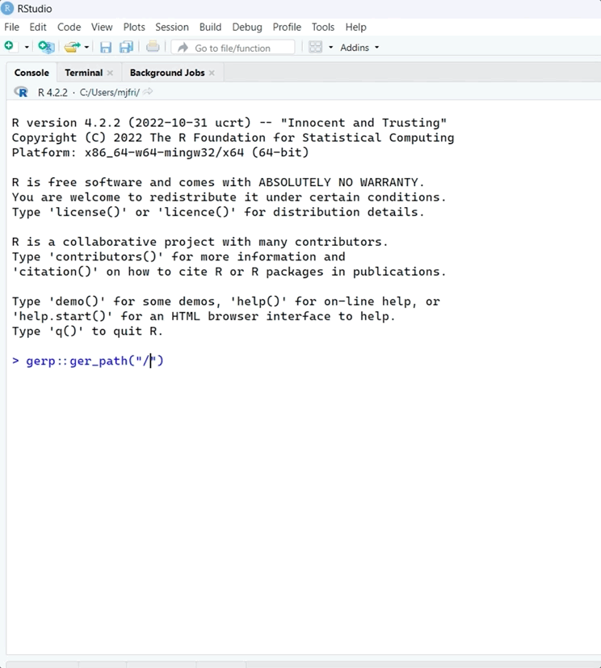

Where do I start learning R?
getting-started.RmdA Google search for the question
above will return a deluge of websites, tutorials, YouTube videos and
blog posts. The results probably aren’t incorrect, but they’re not
likely to contain any practices or habits new R users should adopt when
beginning their R journey. gerp was written to help guide
new users towards a set of ‘good enough’ practices that have been shown
to help “you
get more done in less time and with less pain.“[1] New
R users often struggle to find these habits because they aren’t
typically covered in textbooks or online documentation (with some great
exceptions[2]), but adopting at least a few of these practices will
increase your productivity when you’re using R (and your computer in
general!).
This vignette will go over how to install and load the
gerp package, navigating your computers folders and files,
and how to get started with a new gerp R project.
Practice (prăk′tĭs)
To do or perform habitually or customarily; make a habit of
One of the first practices we’re going to cover is installing and loading packages. R packages are a collection of functions, data, and documentation bundled in a standardized format. R packages are a vital part of the R ecosystem and provide users with a wide range of data analysis, visualization, and modeling tools. Understanding where and how to access them is essential to your early success.
Install a package
R is an open-source programming language, so anyone can create an R package. These packages are typically shared with other R users through online repositories like the Comprehensive R Archive Network (CRAN) or GitHub.
Enter the code below in your R console to download the most recent
version of gerp from GitHub:
install.packages("remotes")
remotes::install_github("mjfrigaard/gerp")R projects
All R projects inevitably involve creating files, so after installing packages, the next thing to decide is where my projects will live. The next practice we’ll cover tools and methods for orienting yourself with your computers’ folder structure.
Folder orientation
“If you don’t know where you are going, you’ll end up someplace else.” - Yogi Berra
An operating system folder structure refers to how files and directories (i.e. folders) are organized on a computer’s hard drive. Folder structures can vary depending on the specific operating system being used. However, most operating systems have the same basic design, including a hierarchical tree-like arrangement with similar common folders:
Users/usr: user-level programs, utilities, libraries, and documentationLibrary/lib: the shared library files that are used by all applicationsbin: holds necessary system binary files and programsetc: contains system configuration filesHome/home: user-specific files and directories
Your computer’s operating system folder structure is organized to provide a logical and predictable way of storing and accessing folders and files on a computer. Applications like Windows Explorer and Finder present our computer’s folder and file structure in a display we can navigate with our mouse and cursor, but behind the scenes they’re accessing the system paths (or locations).
Folder paths typically consist of a series of names that indicate the
hierarchical structure of the folder system, separated by a forward
slash ("/") or a backslash ("\") (depending on
the operating system). In Unix-based systems (like macOS or Linux), the
topmost (or root) folder is usually represented by a forward
slash (/). In Windows systems, the root folder is assigned
a ‘drive letter’ followed by a backslash (i.e, C:\). If
it’s a file path, it may also include the file’s extension.
For example, a Windows file path might look like this:
C:\Users\Username\Documents\file.txt
In this case:
"C:"represents the computer’s hard drive"Users"is a folder name"Username"is the user account folder"Documents"is a sub-folder within that user’s home folder, and"file.txt"is the name and extension of the file
Paths provide the exact location of a file or folder in the directory structure of a computer’s file system.
An example project folder
To keep things simple, let’s assume I’ve chosen to place my R
projects in a projects/ folder. I’ve created the
projects/ subfolder under my Users folder,
which I can locate using using Finder (on macOS):
folder structure on macOS
If I’m using a Windows system, a similar Projects/
folder might look like this in the Windows Explorer:
folder structure on Windows
RStudio’s default working directory
When I open RStudio (on a PC), the Files pane is set
to my User folder (image below), but it’s displaying more
folders than Windows Explorer (image above):
Home folder RStudio (macOS)
These different displays can be confusing, which is it’s better to think of file and folder paths as a location on map–one digit off and you’ll end up in wrong place. However, I can confirm my location by checking the folder path in the Files pane above the folders:
Directory path (Windows)
The folder RStudio initially displays in the Files pane is called the default working directory, and it’s configured when you install RStudio. If you’d like to change it, you can by clicking on Tools > Global Options then Browse to the folder you’d like to use:
Change default working directory
Folder navigation
R comes with a helpful function for printing our current working
directory (or folder) path: getwd().
On macOS, if I check my working directory, I see it’s my user account folder:
getwd()
[1] "/Users/mjfrigaard"Three other helpful functions for viewing your computers’ folders and
files are: dir(), list.files(), and
list.dirs(). I’ll focus on dir(), but the
other two function in a similar way. Passing dir() directly
to the console (with no other arguments) returns the list of folders in
the default working directory:
dir()
[1] "Applications" "Creative Cloud Files" "Desktop"
[4] "digital-id" "Documents" "Downloads"
[7] "Dropbox" "Fonts" "Library"
[10] "Movies" "Music" "opt"
[13] "Pictures" "projects" "Public"
[16] "R" "Themes"If we add the full.names = TRUE argument, we see the
full path to the files and folders:
dir(full.names = TRUE)
[1] "./Applications" "./Creative Cloud Files" "./Desktop"
[4] "./digital-id" "./Documents" "./Downloads"
[7] "./Dropbox" "./Fonts" "./Library"
[10] "./Movies" "./Music" "./opt"
[13] "./Pictures" "./projects" "./Public"
[16] "./R" "./Themes"Adding the full.names returned the folders and files in
the working directory, but added a ./ prefix. In computer
file systems, "." and ".." are special
directory (i.e., folder) names that have specific meanings.
"." represents the current folder, and ".."
represents the parent folder in a file path. These directory names are
used to specify relative paths to other files and directories in the
file system.
Folder trees
folder tree’s are handy tools for navigating a computer’s folder structure. As noted above, operating systems organize folders and files in a hierarchical, tree-like arrangement, with a single root directory (or folder) at the top, and sub-folders branching off from it. Each folder can contain files and additional subfolders and, in turn, can have more files and subfolders.
We’ll use folder trees to describe the special directories implied by
"." and "..":
-
"."represents the current folder and refers to the folder the user is currently in. For example, if I am in the folder"/user/jdoe/documents", the folder tree would look like this:users/ └── jdoe/ └── documents/ <- my location- In this case,
"."refers to same location ("/user/jdoe/documents")
users/ └── jdoe/ └── documents/ -> "." also my location - In this case,
-
".."(dot dot) represents the parent folder. It is used to refer to the folder that contains the current folder. For example, if I am in the folder"/user/jdoe/documents"users/ └── jdoe/ └── documents/ <- my location- Then
".."refers to"/user/jdoe"
users/ └── jdoe/ -> ".." parent folder └── documents/ - Then
ger_path()
The first function we’ll cover is one to get comfortable using,
ger_path(). We’ve already installed and loaded the
gerp package, but sometimes handy to explicitly tell R
which function we intend to use from a package. We can do this by
entering package::function(), and you can see why in the
image below:
All functions and objects in gerp
Using package::function() shows us all the functions and
objects in a package. When we select a package item, we can see the
documentation in yellow:
help for ger_path()
To use ger_path(), start by entering a forward slash
enclosed in quotes ("/")
gerp::ger_path("/")If you hit the Tab key, you’ll see the list of folders available starting at your home directory.
Home directory (macOS)
You can then continue using your mouse (or the arrow keys) to
navigate to the parent folder you want your R project to live in (in my
case, it’s /Users/mjfrigaard/projects/)

ger_path() works the same way on Windows:

The type argument controls whether ger_path() returns a
relative or absolute folder path:
gerp::ger_path("/Users/mjfrigaard/projects/", type = "abs")
[1] "/Users/mjfrigaard/projects"The absolute path returns the complete and specific location of the folder in the file system, starting from the root directory.
gerp::ger_path("/Users/mjfrigaard/projects/", type = "rel")
[1] "projects"The relative path refers to the location of the folder relative to the current working folder (i.e., the folder where the user is currently located).
Creating a gerp project
After locating the R project folder, you can store the output and
pass it to gerp::ger_proj()
pth <- gerp::ger_path("/Users/mjfrigaard/projects/")
gerp::ger_proj(
folder = pth,
name = "my project")and your new ‘good enough’ project will open in a new session:

New gerp project!
.Rproj files
gerp projects use RStudio’s project files (with
extension .Rproj). .Rproj files “contain
project options and can also be used as a shortcut for opening the
project directly from the filesystem.”
When I want to re-open my RStudio project, I navigate to the
.Rproj file and double-click on it to open RStudio:

Open RStudio gerp project
Note: If you’re already using a cloud platform like Dropbox or Google Drive to keep track of your files, choose a different location for your R project folders. Cloud storage services are great, but they’ve been known to cause issues when working with R and RStudio.
The name for this package comes from the excellent article, ‘Good enough practices in scientific computing’ by Greg Wilson, Jennifer Bryan, Karen Cranston, Justin Kitzes, Lex Nederbragt and Tracy K. Teal
Jenny Bryan and Jim Hester address many of these topics in ‘What they forgot to teach you about R’, and I’ve codified them into this package wherever I could.